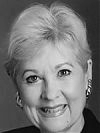
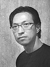
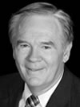

The Jurors
Patricia Meadows
 Senior Vice President of Hall Financial Group and Senior Curator and Collection Manager of the Texas Sculpture Garden, Mrs. Meadows is owner of Art Connections and co-founder and a long-term curator of the Dallas Visual Art Center. Career highlights include originating the Critic's Choice, the Collectors, and the Emergency Artists Support League and organizing the Texas Sculpture Garden. She has also been honored with the Legend Award and the Mayor's Proclamation of 2001.
Makoto Fujimura
 Makoto was born in 1960 in Boston, Massachusetts and educated bi-culturally between the US and Japan. He received an MFA from Tokyo National University of Fine Arts and Music. His new book, River of Grace, traces his journey of mastering Nihonga technique using carefully stone-ground minerals including azurites, malachite and cinnabar, and his deep wrestling with art and faith issues. In 1992, Makoto was honored as the youngest artist ever to have had a piece acquired by the Museum of Contemporary Art, Tokyo. In 1990, Makoto founded The International Arts Movement in New York City which has attracted international notable speakers.
As an artist working from his studio near Ground Zero, Makoto was deeply affected by the tragic events of 9/11, but his arts continues to speak hope even in darkness and the deeper consideration of life's meaning. His works have become part of the collections in the Saint Louis Museum, Museum of Contemporary Art in Tokyo and the Time Warner/AOL/CNN building in Hong King. Makoto was appointed to the National Council of the Arts in 2003, a six year Presidential appointment.
Noted artistic critic Robert Kushner wrote, "The idea of forging a new kind of art, about hope, healing, redemption, refuge, while maintaining visual sophistication and intellectual integrity is a growing movement, one which finds Fujimura's work at the vanguard."
Pete Deison
 Founder of the PCPC Arts Festival, Dr. Peter Van Deison ("Pete") is a pastor, teacher and author. He has served as a pastor in the PCA since 1978. Currently he is the pastor of Church wide Ministries at Park Cities Presbyterian Church in Dallas. He oversees the Deacon Board, Senior Adults, Pastoral Care, Single Adults, Men and Women of the Church groups, Weddings, and teaches a large Sunday School class composed of the mid-lifers of PCPC. He is an Adjunct Professor of Leadership Development at nearby Dallas Theological Seminary. He has written sections in several recent books, one of which is the Christian Educators Handbook on Spiritual Formation. His own book, The Priority of Knowing God focuses on the believers struggle and growth in personal devotions. Pete currently has several other works in progress.
Educational Background
BA, University of Texas (1968); ThM, Dallas
Theological Seminary (1978);
PhD., The Fielding Institute (1994).
Dr. Deison enjoys traveling the world and has experienced the countries of Belgium, France, Netherlands, Germany, Switzerland, Scotland, Turkey, Chad, Thailand, Guatemala, Panama, South America, Australia & New Zealand, Greece on four occasions, Holy Lands on seven occasions, Mexico on two occasions and Ukraine on two occasions.
Dr. Deison took a group to southern France this past May to journey into the history of the Huguenots and the realm of Van Gogh who was the son of a Protestant preacher.
He shares his life with his wife, Harriet; two grown daughters, Mrs. Ginny Huntress and Mrs. Ann Drexler and five grandchildren.